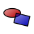
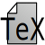

| Home |
| Download |
| Caratteristiche |
| PSTricks |
| Aiutaci |
| Manuale |
| LaTeXDraw 2.0 |
|
|
| LaTeXDraw su SF |
| Forum |
| Files |
| Bugs |
| News |
| English |
| French |
| Italian |
|
 Forme |
 Orientato a PSTricks |
Trasfrmazioni vettoriali |
|
Importazione |
Esportazione |
Cross-Platform |
|
Interfaccia intuitiva |
Caratteristiche classiche |